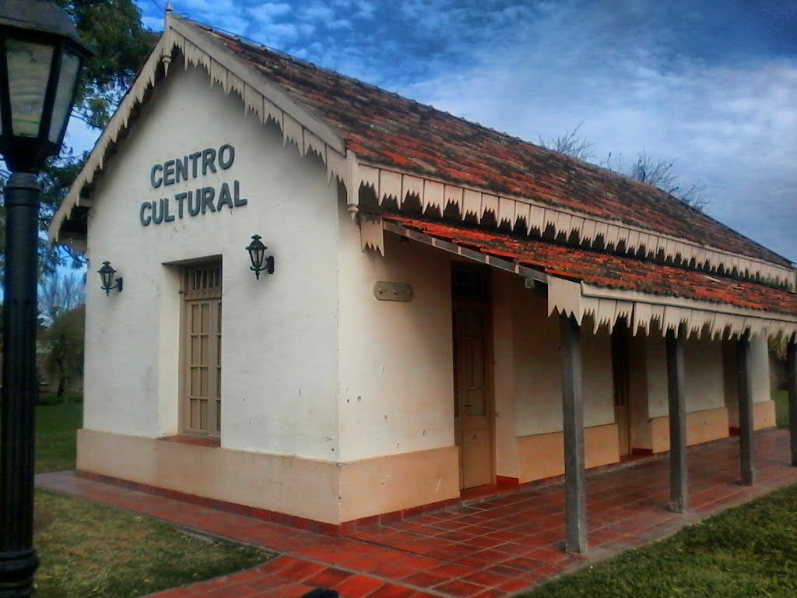

Instalaciones
La Comuna De Franck se encarga de mantener en condiciones ideales sus parques y establecimientos a su disposicion, el trabajo realizado por personal estatal a tenido sus frutos y estamos orgullosos del pueblo que tenemos

Franck es un pueblo Industrializado
Franck es un pueblo de origen Europeo basado en la industria del trabajo y el esfuerzo, es por eso que somos un pueblo industrial y apostamos al futuro a travez de nuestras empresas locales
Seguinos en